개발 도구 설치와 확인安装并确认开发工具
100,000줄의 데이터를 그래프로 한눈에 본다把 100,000 行数据变成图表，一眼看懂
100,000줄의 데이터를 사람의 눈으로 하나씩 읽기는 어렵습니다. 아래 네 화면은 같은 가상 데이터 파일(.csv)을 다룬 과정입니다. 원본에는 데이터가 줄마다 이어져 있습니다. 먼저 100,000행·9열·빈 값 0개를 확인하고, 코드를 실행해 Notebook 안에서 그래프를 봅니다. 같은 결과에 제목·색상·배치를 더하면 발표나 공유에 사용할 한 장의 이미지로도 다듬을 수 있습니다.人很难逐行阅读 100,000 行数据。下面四个画面展示了处理同一个虚拟数据文件（.csv）的过程。原始文件中的数据逐行排列。先确认 100,000 行、9 列、空值 0 个，再运行代码，在 Notebook 中查看图表。之后还可以加入标题、颜色与版面，把同一结果整理成适合展示或分享的一张图片。
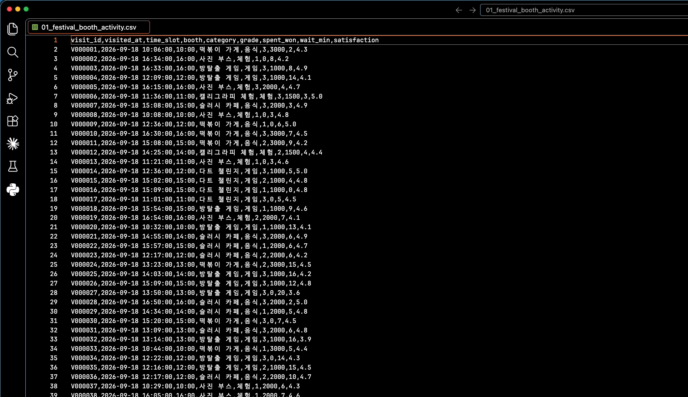
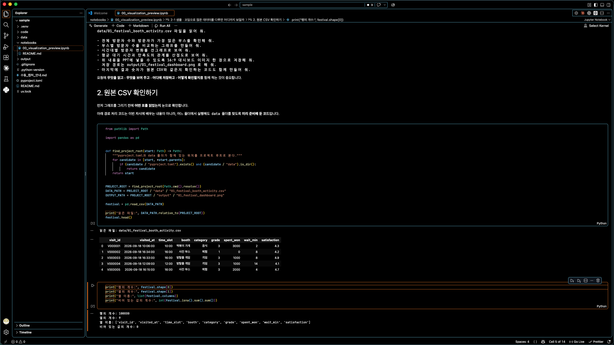
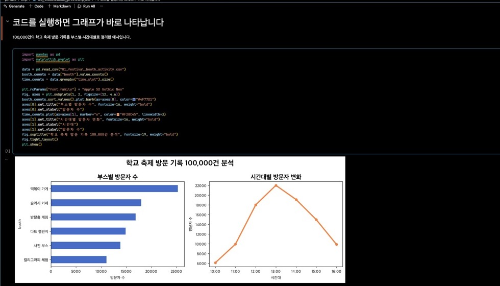
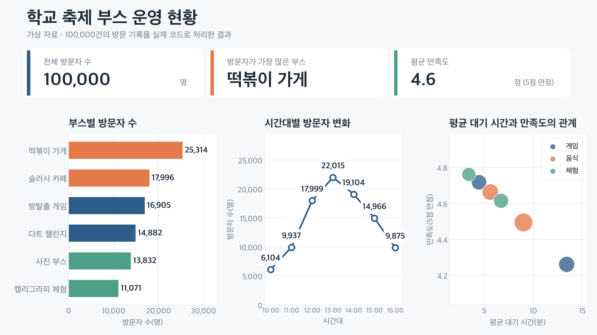
지금은 코딩으로 많은 자료를 처리하고, 결과를 보기 좋게 다듬을 수도 있다는 예시를 봅니다. 수행평가 1에서는 더 단순한 데이터 파일(.csv)을 AI와 함께 다루며, 교사가 지정한 그래프 한 개를 완성합니다.现在先看一个用代码处理大量资料，并把结果整理得更易读的例子。实作评价 1 会使用更简单的数据文件（.csv），与 AI 一起完成教师指定的一张图表。
이번 차시는 세 가지 도구를 순서대로 준비한다本课时按顺序准备三种工具
코딩은 특별한 한 프로그램 안에서만 하는 일이 아닙니다. 먼저 컴퓨터에 할 일을 설명할 언어를 준비하고, 코드 작성을 도울 AI 도구를 설치합니다. 마지막에는 파일과 코드를 편하게 볼 글쓰기 도구를 준비합니다.编程并不只发生在某一个特殊程序里。先准备向电脑说明任务的语言，再安装帮助编写代码的 AI 工具。最后准备便于查看文件与代码的书写工具。
1주차에 배운 것처럼, 컴퓨터에 어떤 일을 시킬지 코드로 설명하는 언어입니다. 이번 차시는 Python으로 적은 코드가 실행될 수 있도록 준비합니다.正如第一周所学，它是用代码向电脑说明要做什么的语言。本课时要让用 Python 写的代码能够运行。
자연어 요청을 받아 AI 모델·파일·도구를 연결하고, 코드 작성이나 설명 같은 작업을 진행합니다.接收自然语言请求，连接 AI 模型、文件与工具，并推进编写或说明代码等工作。
코드는 글이므로 메모장에도 쓸 수 있고, VS Code만이 유일한 방법도 아닙니다. 다만 여러 파일과 코드, 실행 결과를 한 화면에서 보기 편해 이 수업의 작업 공간으로 사용합니다.代码也是文字，记事本也能写，VS Code 也不是唯一的方法。但它便于在一个画面中查看多个文件、代码与运行结果，因此本课程把它作为工作空间。
에이전트는 사용자의 요청을 받아 AI·파일·도구를 연결하고 작업을 진행하는 프로그램입니다. OpenCode 자체가 AI 모델인 것은 아닙니다.智能体是接收用户请求，连接 AI、文件与工具并推进工作的程序。OpenCode 本身并不是 AI 模型。
이번 차시는 Python → OpenCode → VS Code 순서로 준비합니다. 준비가 끝난 뒤에는 VS Code에서 파일을 보면서 OpenCode와 대화하고, Python으로 작성된 코드를 실행해 결과를 확인합니다.本课时按 Python → OpenCode → VS Code 的顺序准备。准备完成后，会在 VS Code 中查看文件、与 OpenCode 对话，并执行 Python 代码来确认结果。
코드를 실행할 Python을 설치한다安装用于执行代码的 Python 실습实践
Python은 우리가 작성하거나 AI가 만든 Python 코드를 컴퓨터가 실행할 수 있게 합니다. 공식 Windows 다운로드 페이지에서 Python 3.13의 Windows installer (64-bit)를 선택합니다.Python 让电脑能够执行我们或 AI 编写的 Python 代码。在 Windows 官方下载页选择 Python 3.13 的 Windows installer (64-bit)。
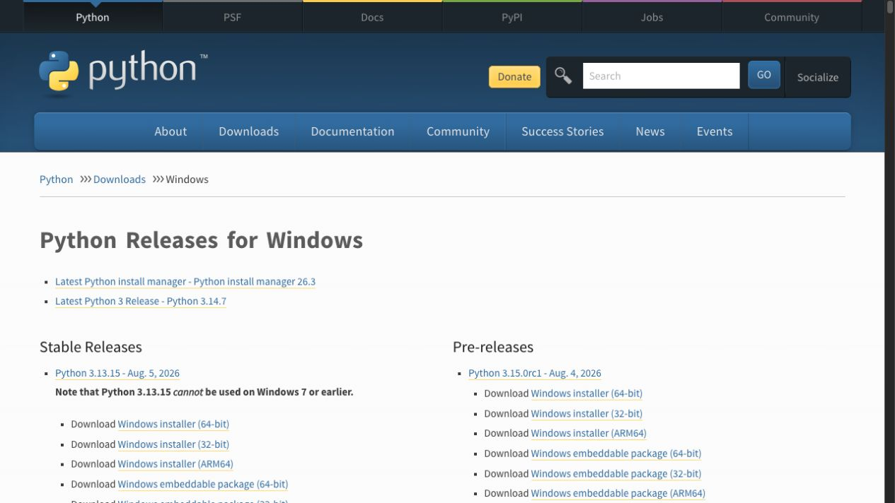
- 위의 공식 주소를 눌러 Python Windows 다운로드 페이지를 연다.点击上方官方网站，打开 Python Windows 下载页。
- Python 3.13의 Windows installer (64-bit)를 내려받는다.下载 Python 3.13 的 Windows installer (64-bit)。
- 내려받은 설치 파일을 실행한다. 첫 화면에 Add python.exe to PATH가 보이면 반드시 체크한다.运行下载的安装文件。如果首屏出现 Add python.exe to PATH，请务必勾选。
- Install Now 또는 Install을 누르고 설치가 끝날 때까지 기다린다.点击 Install Now 或 Install，等待安装完成。
- Setup was successful이 보이면 설치 창을 닫는다.出现 Setup was successful 后关闭安装窗口。
이번 설치에서 Add python.exe to PATH 항목이 보이면 반드시 체크합니다. PATH는 Windows가 프로그램의 위치를 찾을 때 확인하는 주소 목록입니다. 이 항목을 체크해야 다음 쪽에서 프로그램 이름만 입력해도 Python을 찾을 수 있습니다.本次安装中如果看到 Add python.exe to PATH，请务必勾选。PATH 是 Windows 查找程序位置时使用的地址列表。勾选后，下一页只输入程序名也能找到 Python。
설치가 끝났는지 직접 확인한다亲自确认是否安装完成
설치 창이 닫혔다고 준비가 끝난 것은 아닙니다. 먼저 검은 화면을 열고 Python의 버전을 물어봅니다. 화면의 이름은 실습한 뒤에 알아봅니다.安装窗口关闭并不代表准备完成。先打开黑色窗口，询问 Python 的版本。完成实践后再了解这个画面的名称。
- 키보드의 Windows 키를 누르거나 화면 아래의 시작 버튼을 누른다.按键盘上的 Windows 键，或点击屏幕下方的开始按钮。
- 검색창에 PowerShell을 입력한다.在搜索框中输入 PowerShell。
- Windows PowerShell을 누르면 글자를 입력할 수 있는 검은 화면이 열린다.点击 Windows PowerShell，会打开可以输入文字的黑色窗口。
python --version
Python 3.13.x
숫자가 완전히 같을 필요는 없습니다. Python 3.13으로 시작하면 다음 단계로 갑니다. 명령을 찾을 수 없다고 나오면 철자를 확인하고, Python 설치 과정의 Add python.exe to PATH 선택을 다시 확인합니다.数字不必完全相同。以 Python 3.13 开头即可进入下一步。如果提示找不到命令，请检查拼写和安装时的 Add python.exe to PATH 选项。
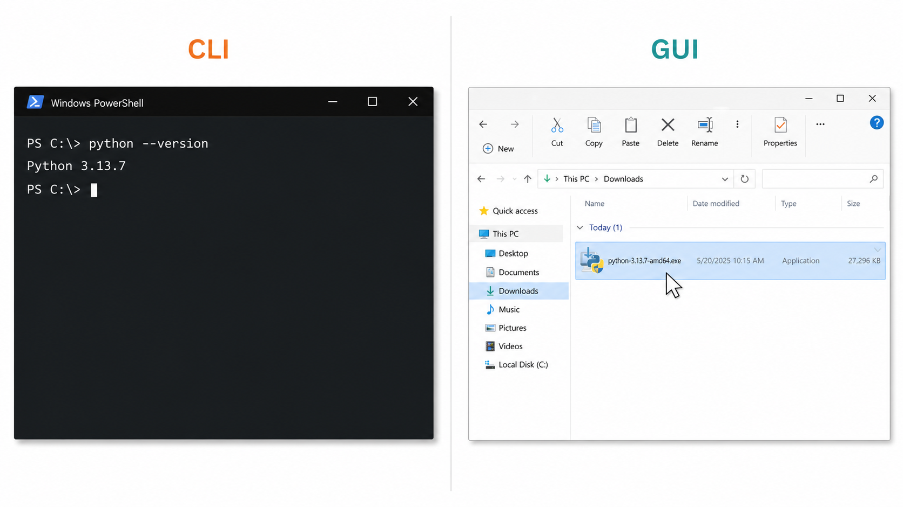
GUI는 창·아이콘·버튼을 마우스로 조작하고, CLI는 짧은 문자 명령을 입력해 컴퓨터의 응답을 읽습니다. 이번 차시는 명령을 외우는 것이 아니라, 화면에 나온 문장을 그대로 사용합니다.GUI 用鼠标操作窗口、图标和按钮；CLI 输入简短文字命令并读取电脑的回应。本课时不用背命令，只需照着页面输入。
Node.js와 OpenCode가 있는지 먼저 확인한다先确认是否已有 Node.js 与 OpenCode 실습实践
OpenCode는 npm이라는 설치 도구를 사용하며, npm은 Node.js와 함께 설치됩니다. Python을 확인했던 것처럼 PowerShell에서 세 프로그램의 상태를 먼저 확인하고, 필요한 것만 설치합니다.OpenCode 使用名为 npm 的安装工具，而 npm 会随 Node.js 一起安装。像确认 Python 一样，先在 PowerShell 中确认三个程序的状态，只安装缺少的项目。
node --version npm --version opencode --version
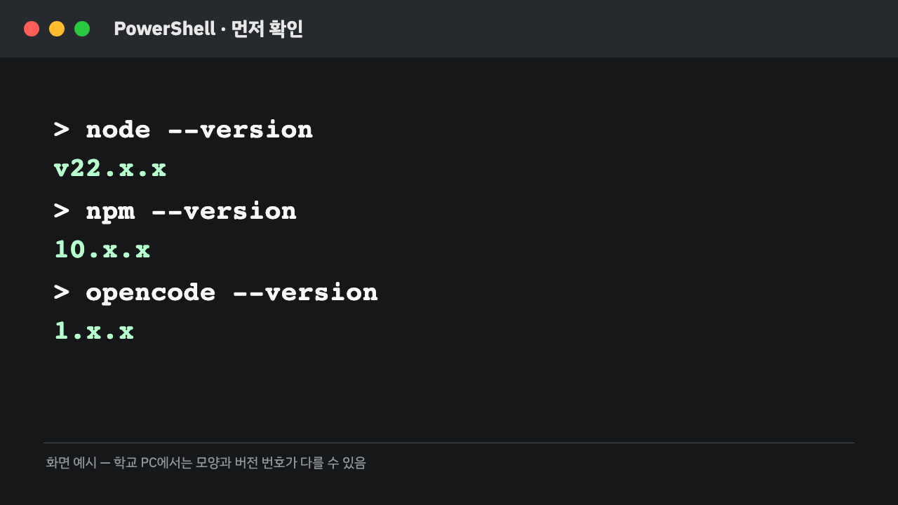
이미 있는 프로그램을 다시 설치하면 시간이 걸리고, 서로 다른 버전이 섞여 문제가 생길 수도 있습니다. 그래서 개발 도구는 항상 확인 → 필요한 것만 설치 → 다시 확인의 순서로 준비합니다.重复安装已有程序会浪费时间，也可能混入不同版本造成问题。因此开发工具始终按确认 → 只安装需要的项目 → 再次确认的顺序准备。
node 또는 npm이 없다면 다음 쪽에서 Node.js를 설치합니다. 둘은 있고 opencode만 없다면 Node.js 설치 쪽을 건너뛰고 OpenCode 설치로 갑니다.没有 node 或 npm 时，在下一页安装 Node.js。两者都有而只有 opencode 没有时，跳过 Node.js 安装，直接进入 OpenCode 安装。
Node.js가 없을 때만 설치한다仅在没有 Node.js 时安装
Node.js 자체를 배우는 시간이 아닙니다. 지금은 OpenCode를 설치할 때 사용할 npm을 준비하기 위해 설치합니다.这不是学习 Node.js 的时间。现在安装它，是为了准备安装 OpenCode 时要使用的 npm。
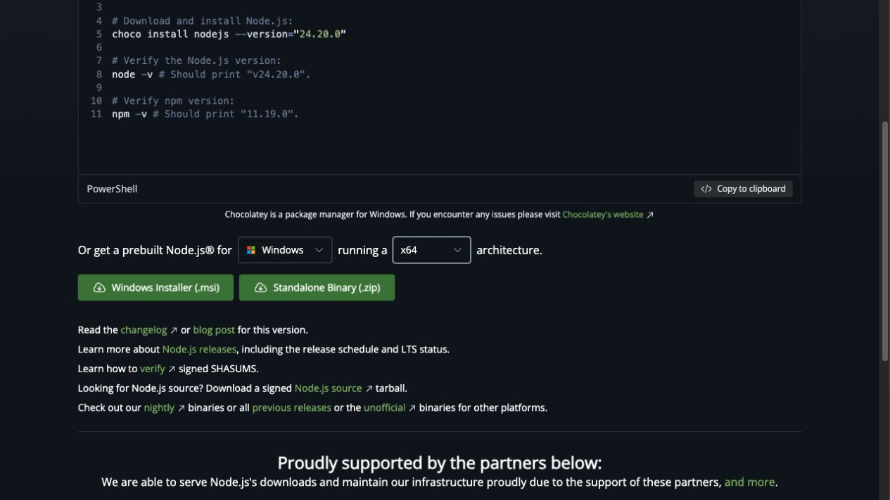
- 위 공식 주소에서 LTS · Windows · x64 · Windows Installer(.msi)를 내려받아 실행한다.从上方官网下载安装 LTS · Windows · x64 · Windows Installer(.msi) 并运行。
- 기본 선택을 유지하며 Next → Install → Finish 순서로 설치한다.保持默认选项，按 Next → Install → Finish 顺序安装。
- PowerShell 창을 완전히 닫고 새로 연다. Node.js와 npm의 버전을 다시 확인한다.完全关闭 PowerShell 窗口并重新打开。再次确认 Node.js 与 npm 的版本。
node --version npm --version
Long Term Support, 즉 ‘장기 지원’의 약자입니다. 새 기능을 가장 빨리 받는 버전보다 오랫동안 오류와 보안 문제를 수정해 주는 안정적인 버전입니다. 이 수업에서는 LTS를 선택합니다.Long Term Support 的缩写，意思是“长期支持”。相比最快获得新功能的版本，它会长期修复错误和安全问题，更稳定。本课程选择 LTS。
AI와 대화할 OpenCode를 설치한다安装用于和 AI 对话的 OpenCode 실습实践
OpenCode는 코드를 직접 모두 입력하는 대신, 원하는 작업을 자연어로 설명하고 결과를 함께 확인하게 해 주는 도구입니다.OpenCode 让我们用自然语言说明想做的工作，并一起检查结果，而不是亲手输入所有代码。
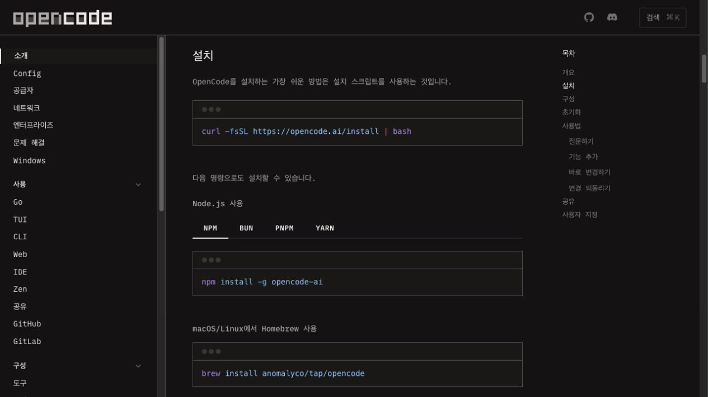
npm install -g opencode-ai
설치가 끝나면 PowerShell 창을 완전히 닫고 새로 엽니다. 새 창에서 세 프로그램을 다시 확인합니다.安装完成后，完全关闭 PowerShell 窗口并重新打开。在新窗口中再次确认三个程序。
node --version npm --version opencode --version
npm은 Node.js와 함께 설치된 도구입니다. 이번 차시는 이름과 역할만 알고, 사용법을 따로 외우지 않습니다. opencode --version에서 버전 번호가 보이면 VS Code 단계로 갑니다. CommandNotFoundException이 보이면 다음 쪽으로 갑니다.npm 是随 Node.js 一起安装的工具。本课时只需知道名称和作用，不必另外背使用方法。如果 opencode --version 显示版本号，就进入 VS Code 步骤。如果出现 CommandNotFoundException，请进入下一页。
설치는 됐지만 PowerShell이 명령의 위치를 찾지 못했다已经安装，但 PowerShell 没有找到命令的位置
npm install -g opencode-ai가 정상적으로 끝나도 아래 오류가 나올 수 있습니다. 빨간 글자 전체를 외우지 말고, 세 부분만 읽습니다.即使 npm install -g opencode-ai 正常完成，也可能出现下面的错误。不用背下全部红字，只读三个部分。
PS> opencode --version opencode : 'opencode' 용어가 cmdlet, 함수, 스크립트 파일 또는 실행할 수 있는 프로그램 이름으로 인식되지 않습니다. CategoryInfo : ObjectNotFound FullyQualifiedErrorId : CommandNotFoundException
opencode무엇을 찾다가 실패했는지找什么时失败CommandNotFoundException명령을 찾지 못했다는 오류 종류找不到命令的错误类型Windows의 PATH는 명령 프로그램을 찾을 때 보는 ‘주소록’입니다. OpenCode가 npm 폴더에 설치되었어도 그 폴더가 PATH에 없거나, 이미 열려 있던 PowerShell이 변경된 PATH를 아직 읽지 못하면 이 오류가 납니다.Windows 的 PATH 是查找命令程序时使用的“地址簿”。即使 OpenCode 已安装到 npm 文件夹，如果该文件夹不在 PATH 中，或已打开的 PowerShell 还没有重新读取 PATH，就会出现此错误。
npm이 사용한 위치를 PATH에 한 번만 추가한다将 npm 使用的位置只添加一次到 PATH
학생 이름이 들어간 경로를 직접 적지 않고, npm config get prefix로 현재 컴퓨터의 실제 npm 설치 위치를 읽습니다.不手动输入带学生名称的路径，而是用 npm config get prefix 读取当前电脑上 npm 的实际安装位置。
$npmPrefix = (npm config get prefix).Trim() $npmPrefix Test-Path (Join-Path $npmPrefix "opencode.cmd")
TrueOpenCode 명령 파일은 있습니다. 아래 명령으로 PATH만 복구합니다.OpenCode 命令文件存在。只需用下面的命令修复 PATH。
False명령 파일이 없습니다. npm install -g opencode-ai를 다시 확인합니다.命令文件不存在。重新确认 npm install -g opencode-ai。
True일 때 PATH에 중복 없이 추가当结果为 True 时，不重复地添加到 PATH$npmPrefix = (npm config get prefix).Trim()
[string]$userPath = [Environment]::GetEnvironmentVariable("Path", "User")
$pathItems = @(
($userPath -split ";") |
ForEach-Object { $_.Trim() } |
Where-Object { $_ }
)
if ($pathItems -notcontains $npmPrefix) {
$newUserPath = (($pathItems + $npmPrefix) -join ";")
[Environment]::SetEnvironmentVariable("Path", $newUserPath, "User")
}명령이 끝나면 PowerShell과 VS Code를 완전히 닫고 새로 엽니다. 새 PowerShell에서 두 줄을 실행합니다.命令完成后，完全关闭 PowerShell 和 VS Code，再重新打开。在新的 PowerShell 中运行下面两行。
where.exe opencode opencode --version
C:\Users\student...처럼 특정 학생의 경로를 고정하지 않습니다. 컴퓨터마다 실제 경로를 읽고, 이미 PATH에 있는 경로는 다시 추가하지 않습니다.不会像 C:\Users\student... 那样固定某个学生的路径。它会读取每台电脑的实际路径，并且不会重复添加已在 PATH 中的路径。
오류 문장이 다르면 해결 명령도 다르다错误信息不同，解决命令也不同
CommandNotFoundException을 해결하는 PATH 명령과 아래의 스크립트 실행 정책 명령은 서로 다릅니다. 아래와 같은 차단 문장이 실제로 나온 학생만 실행합니다.用于解决 CommandNotFoundException 的 PATH 命令，与下面的脚本执行策略命令不同。只有实际出现下面拦截信息的学生才执行。
npm.ps1 cannot be loaded because running scripts is disabled와 같은 차단 메시지가 나오면 아래 명령을 한 번 입력합니다.若出现 npm.ps1 cannot be loaded because running scripts is disabled 等拦截信息，只需输入一次下面的命令。
Set-ExecutionPolicy -Scope CurrentUser -ExecutionPolicy RemoteSigned
- 확인 질문이 나오면
Y를 입력하고 Enter를 누른다.出现确认问题时输入Y并按 Enter。 - PowerShell을 완전히 닫았다가 새로 연다.完全关闭 PowerShell 后重新打开。
- 앞쪽의 OpenCode 설치 명령과 버전 확인을 다시 진행한다.重新执行前一页的 OpenCode 安装命令并确认版本。
같은 차단 메시지가 계속 나오면 보안 설정을 더 바꾸지 말고 화면을 그대로 교사에게 보여 줍니다.如果仍出现同样的阻止信息，不要继续更改安全设置，请把当前画面直接给老师看。
메모장보다 코드를 쓰기 편한 글쓰기 도구比记事本更适合写代码的书写工具 실습实践
코드는 글이므로 메모장에도 쓸 수 있습니다. 하지만 파일이 많아지면 찾기 어렵고, 틀린 부분도 눈에 잘 띄지 않습니다. VS Code는 코드와 폴더를 정리하고, 실행 결과까지 한 화면에서 볼 수 있게 해 주는 편집기입니다.代码也是文字，所以记事本也能写。但文件变多后难以查找，错误也不容易发现。VS Code 是一种编辑器，可以整理代码和文件夹，并在一个画面中查看运行结果。
글자를 입력하고 .py 파일로 저장한다.输入文字并保存为 .py 文件。
폴더와 파일 찾기 · 코드 구분하기 · 확장 기능 추가하기 · 터미널에서 실행하기查找文件夹与文件 · 区分代码 · 添加扩展 · 在终端运行
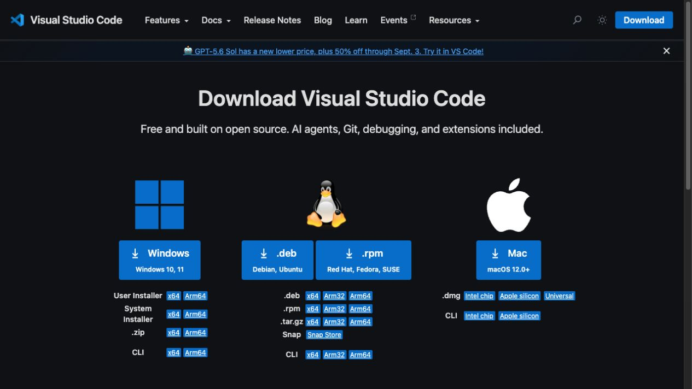
- 위 공식 주소에서 Windows User Installer x64를 내려받아 실행한다. 기존 VS Code가 있어도 같은 방법으로 진행한다.从上方官网下载并运行 Windows User Installer x64。即使已有 VS Code，也按同样方式进行。
- 사용권에 동의하고 기본 선택을 유지한다. Add to PATH 항목이 보이면 반드시 체크한다.同意许可并保持默认选项。若看到 Add to PATH，请务必勾选。
- 설치를 마치고 Visual Studio Code 실행을 선택한다. VS Code 화면이 열리면 준비 완료다.完成安装并选择运行 Visual Studio Code。VS Code 画面打开即表示准备完成。
화면의 네 부분부터 찾는다先找到画面的四个部分
처음부터 모든 메뉴를 외울 필요는 없습니다. 이번 수업에서 계속 사용할 네 부분만 찾습니다.不需要一开始就记住所有菜单。先找到本课程会持续使用的四个部分。
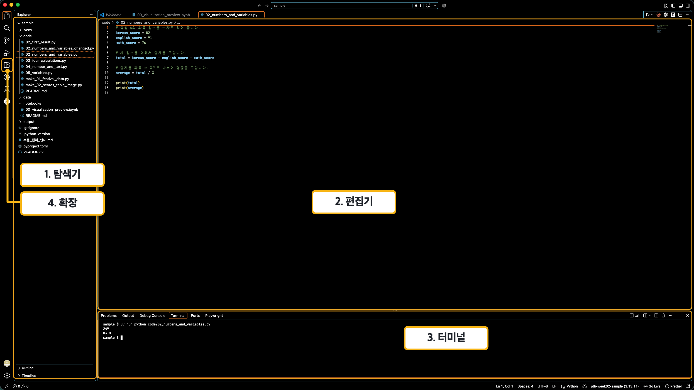
이번 차시에는 확장에서 두 가지 도구를 설치하고, 터미널을 여는 방법을 익힙니다. 탐색기와 편집기는 다음 차시부터 실제 파일을 받을 때 사용합니다.本课时会在扩展中安装两个工具，并学习打开终端的方法。资源管理器与编辑器从下一课收到实际文件后再使用。
Microsoft가 만든 확장 두 개만 설치한다只安装两个由 Microsoft 制作的扩展
Korean Language Pack은 VS Code 메뉴를 한국어로 바꾸고, Python 확장은 Python 파일을 알아보고 실행을 도와줍니다. 이름뿐 아니라 게시자가 Microsoft인지 확인합니다.Korean Language Pack 将 VS Code 菜单改为韩语，Python 扩展帮助识别和运行 Python 文件。除了名称，还要确认发布者是 Microsoft。
메뉴와 안내 문구를 한국어로 표시한다.把菜单与提示文字显示为韩语。
Python 파일을 알아보고 실행 버튼·코드 구분·오류 표시를 더한다.识别 Python 文件，并添加运行按钮、代码区分与错误提示。
- 왼쪽의 확장 아이콘(네모 네 개)을 누르고 Korean Language Pack을 검색한다. 게시자 Microsoft를 확인하고 Install을 누른다.点击左侧的扩展图标（四个方块），搜索 Korean Language Pack。确认发布者为 Microsoft 后点击 Install。
- 다시 Python을 검색하고, 이름이 Python이며 게시자가 Microsoft인 항목을 설치한다.再次搜索 Python，安装名称为 Python、发布者为 Microsoft 的项目。
- 한국어 적용을 위해 Restart 또는 Change Language and Restart가 보이면 누른다. 이미 한국어라면 그대로 다음 단계로 간다.若出现 Restart 或 Change Language and Restart，请点击以应用韩语。若已经是韩语，直接进入下一步。
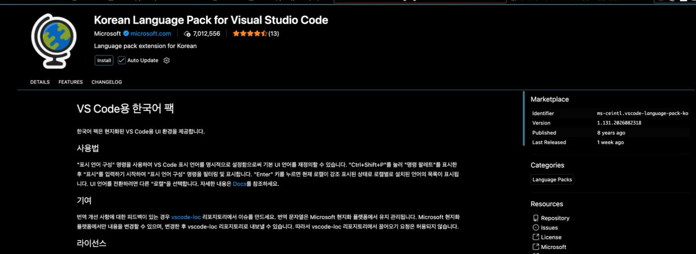
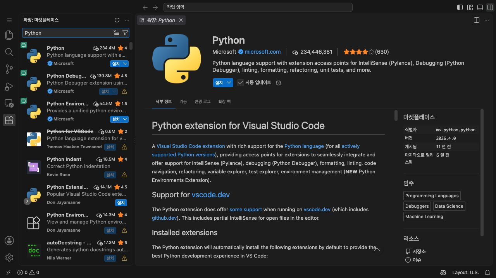
Ctrl + Shift + P를 누르고 Configure Display Language를 검색합니다. 표시할 언어에서 한국어(ko) 또는 중국어(zh-cn)를 고른 뒤 VS Code를 다시 시작하면 언어가 바뀝니다.按 Ctrl + Shift + P，搜索 Configure Display Language。选择韩语（ko）或中文（zh-cn），重新启动 VS Code 后即可切换显示语言。
VS Code 안에서 OpenCode와 AI 모델을 연결한다在 VS Code 中连接 OpenCode 与 AI 模型 실습实践
OpenCode 프로그램만 설치해서는 아직 AI와 대화할 수 없습니다. OpenCode는 대화 창구이고, 실제로 답을 만드는 AI 모델 제공자를 한 번 연결해야 합니다.只安装 OpenCode 程序还不能与 AI 对话。OpenCode 是对话窗口，还需要连接一个真正生成回答的 AI 模型提供方。
- 위 메뉴에서 터미널 → 새 터미널을 누른다.从上方菜单选择终端 → 新建终端。
- 열린 터미널에
opencode를 입력해 OpenCode 화면을 연다.在打开的终端中输入opencode，打开 OpenCode 画面。 - OpenCode 안에서
/connect를 입력하고 OpenCode Zen (Recommended)을 선택한다.在 OpenCode 中输入/connect，选择 OpenCode Zen (Recommended)。
opencode
/connect
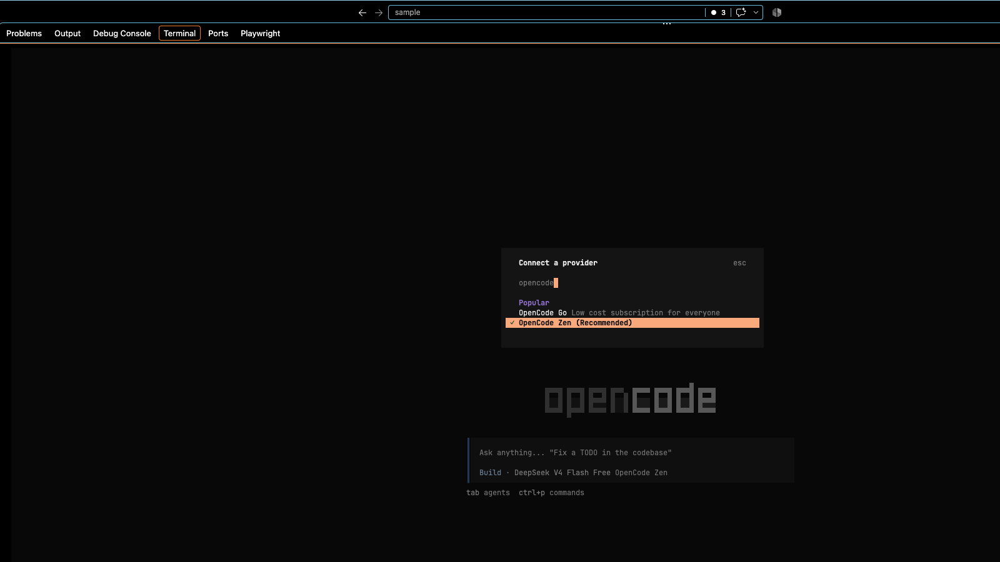
수업용 연결 정보를 등록하고 모델을 고른다登记课程连接信息并选择模型
OpenCode Zen에 로그인한 뒤 API 키(API key)를 만듭니다. API 키는 OpenCode가 AI 모델을 사용할 수 있도록 허락하는 비밀 출입증입니다.登录 OpenCode Zen 后创建 API 密钥（API key）。API 密钥是允许 OpenCode 使用 AI 模型的秘密通行证。
- opencode.ai/zen의 공식 화면에서 수업에 사용할 계정으로 로그인한다.在 opencode.ai/zen 官方页面使用课程账号登录。
- 왼쪽의 API 키를 열고 API 키 생성을 누른 뒤 새 키를 복사한다. 카드나 결제정보를 요구하면 진행을 멈춘다.打开左侧的 API 密钥，点击创建 API 密钥并复制新密钥。若要求银行卡或支付信息，请停止操作。
- VS Code의 OpenCode 화면으로 돌아와 API key 전용 입력칸이 나타났을 때만 붙여넣고 Enter를 누른다.回到 VS Code 的 OpenCode 画面，只有出现 API key 专用输入框时才粘贴并按 Enter。
/models를 입력하고 수업 당일 교사가 지정한 Free 모델을 선택한다. 이름이나 설명에 Free 표시가 있는지 확인한다.输入/models，选择上课当天老师指定的免费模型。确认名称或说明中带有 Free 标记。
/models
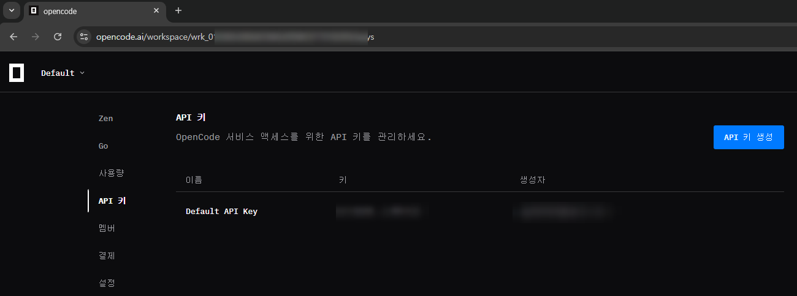
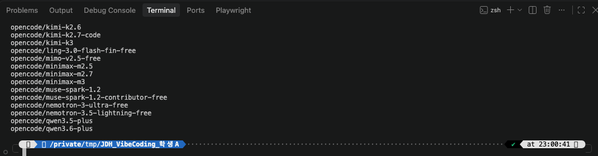
카드나 결제 정보 입력을 요구하면 입력하지 말고 교사에게 알립니다. API 키는 OpenCode의 전용 입력칸에만 붙여넣습니다. 무료 모델 목록은 바뀔 수 있으므로 수업 당일에는 교사가 확인한 Free 모델을 고릅니다.如果要求输入银行卡或支付信息，不要输入，并告知老师。API 密钥只粘贴在 OpenCode 的专用输入框中。免费模型列表可能变化，上课当天请选择老师确认过的免费模型。
첫 대화로 연결을 확인한다用第一次对话确认连接 실습实践
모델 연결이 끝나면 짧은 첫 요청을 보내고 OpenCode가 응답하는지 확인합니다.模型连接完成后发送简短的第一次请求，确认 OpenCode 能否回答。
이 수업에서 OpenCode가 도울 수 있는 일을 세 가지만 알려 줘.
OpenCode가 응답하는지, 답이 세 가지 항목으로 나뉘었는지 확인합니다. 첫 요청은 연결 상태와 요청한 형식을 확인하는 짧은 대화입니다.确认 OpenCode 是否回答，以及回答是否分为三个项目。第一次请求用于确认连接状态与请求格式。
설치보다 중요한 것은 역할과 상태다比安装更重要的是作用与状态
python --version에서 Python의 버전 번호가 보인다.python --version显示 Python 的版本号。node --version과npm --version에서 숫자가 보인다.node --version与npm --version显示版本号。opencode --version에서 숫자가 보인다.opencode --version显示版本号。- VS Code에서 Microsoft의 Korean Language Pack과 Python 확장이 설치되어 있다.VS Code 中已安装 Microsoft 的 Korean Language Pack 与 Python 扩展。
- OpenCode에 수업용 제공자와 교사가 지정한 모델을 연결했다.已在 OpenCode 中连接课程提供方并选择老师指定的模型。
- VS Code 터미널에서 OpenCode의 첫 응답을 확인했다.已在 VS Code 终端确认 OpenCode 的第一次回答。
CLI는 무서운 검은 화면이 아니라, 컴퓨터와 AI에게 짧은 문장으로 요청하고 응답을 읽는 창이다.CLI 不是可怕的黑色画面，而是用短句向电脑和 AI 提出请求并阅读回应的窗口。
환경 점검이 끝났습니다. 다음에는 준비된 Python 파일을 읽고 실행하면서 숫자·글자·변수·계산이 어떻게 정보가 되는지 살펴봅니다.环境检查完成。下一课将读取并运行准备好的 Python 文件，观察数字、文字、变量与计算如何表达信息。
OpenCode는 실행되지만 임시 PATH 등록의 중복을 확인한다OpenCode 可以运行，但需检查临时 PATH 是否重复登记 교사용教师用
이 절차는 opencode --version이 이미 정상 작동하는 PC를 대상으로 합니다. 지난 수업의 임시 명령이 사용자 PATH에 같은 npm 경로를 여러 번 넣었는지만 확인하고, 중복이 있을 때만 하나로 정리합니다.此步骤面向opencode --version 已能正常运行的电脑。它只检查上节课的临时命令是否在用户 PATH 中重复添加了相同的 npm 路径，并仅在出现重复时整理为一项。
이 명령은 OpenCode를 설치하거나 누락된 PATH를 새로 추가하지 않습니다. npm config get prefix로 PC별 실제 경로를 자동으로 가져오므로 모든 PC에서 명령을 고치지 않고 그대로 실행합니다.此命令不会安装 OpenCode，也不会新增缺失的 PATH。它会通过 npm config get prefix 自动取得每台电脑的实际路径，因此所有电脑都可直接运行，无需修改命令。
$npmPrefix = (npm config get prefix).Trim()
$normalized = $npmPrefix.TrimEnd([IO.Path]::DirectorySeparatorChar)
[string]$userPath = [Environment]::GetEnvironmentVariable("Path", "User")
$pathItems = @(
($userPath -split ";") |
ForEach-Object { $_.Trim() } |
Where-Object { $_ }
)
$sameItems = @(
$pathItems |
Where-Object { $_.TrimEnd([IO.Path]::DirectorySeparatorChar) -ieq $normalized }
)
$beforeCount = $sameItems.Count
if ($beforeCount -gt 1) {
$otherItems = @(
$pathItems |
Where-Object { $_.TrimEnd([IO.Path]::DirectorySeparatorChar) -ine $normalized }
)
$newUserPath = (($otherItems + $npmPrefix) -join ";")
[Environment]::SetEnvironmentVariable("Path", $newUserPath, "User")
$afterCount = 1
$result = "중복된 npm 경로를 하나로 정리했습니다."
} else {
$afterCount = $beforeCount
$result = "중복이 없어 PATH를 변경하지 않았습니다."
}
Write-Host $result -ForegroundColor Green
Write-Host "npm 경로: $npmPrefix"
Write-Host "정리 전 사용자 PATH 등록 횟수: $beforeCount"
Write-Host "정리 후 사용자 PATH 등록 횟수: $afterCount"
where.exe opencode
opencode --version등록 횟수와 결과 문장만 확인한다只需确认登记次数与结果信息 교사용教师用
중복된 npm 경로를 하나로 정리했습니다.
사용자 PATH를 자동으로 하나만 남깁니다.已将重复的 npm 路径整理为一项。
自动在用户 PATH 中只保留一项。
중복이 없어 PATH를 변경하지 않았습니다.
정상 실행 중이므로 그대로 둡니다.没有重复，因此未修改 PATH。
目前运行正常，保持原状。
OpenCode가 이미 실행된다면 시스템 PATH 등 다른 범위에서 경로를 찾고 있을 수 있습니다. 이 사후 점검에서는 사용자 PATH가 0이어도 새 경로를 추가하지 않습니다.如果 OpenCode 已经能够运行，可能是通过系统 PATH 等其他范围找到路径。因此在本次课后检查中，即使用户 PATH 为 0，也不会新增路径。
- 중복을 정리했다면 PowerShell과 VS Code를 완전히 종료하고 다시 엽니다.若已整理重复项，请完全关闭 PowerShell 与 VS Code 后重新打开。
where.exe opencode에 실제 위치가 표시되는지 확인합니다.确认where.exe opencode是否显示实际位置。opencode --version에 버전 번호가 나오면 완료입니다.opencode --version显示版本号即表示完成。
CommandNotFoundException이 나타나는 PC는 이 사후 점검 대상이 아닙니다. 앞쪽의 설치는 끝났지만 OpenCode가 실행되지 않는 경우로 돌아갑니다.出现 CommandNotFoundException 的电脑不属于本次课后检查对象。请返回前面的安装完成但 OpenCode 无法运行步骤。